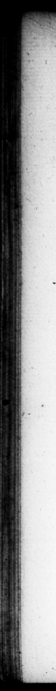

2. 1 0. 6 U ET. TA AN O. netravit, niſi cxercitus ſe— recuſaſler. Quan denique accitam in urbem, non nifi maximis honoribus præmiiſque auctam remiſit. Filiumque natum appellare nomine F wa paſſus eſt, Quem quidem nonnulli Græcorum ſimilem quoque Cæſaris & forma & inceſſu tradiderunt, M. Antonius agnitum etiam ab eo ſenarui affirmavit : quæ ſcire C. Matium, & C. Oppium, reliquoſque Cæſaris amicos : quorum C. Oppius, quaſi plane efenſione ac _patrociniv- res egeret, librum edidit, Non eſſe Cæſaris ſilium, quem Cleopatra . dicat, Helvius Cuma Trib. leb. plexiſque confeſſus eſt, Babulfle ſe ſcriptam paratamque legem, quam Czſar ferre juſliſſet, cum ipſe abeſſet, nti uxores liberorum querendorum cauſſa, quas & quot vellet, duceme liceret. Ac ne cui dubium omnino ſit, & impudicitiæ eum, & adulteriorum flagraſſe infamia, Curio 2 and permitted her to call # ſon —— / AS = Sy " = S3 re” l 1 * 9 = f — n * 3 2 Cd LO refuſed to fotow him. At laſt be in. wited her to Rome, and ſent her back again loadened with honours and pre4 8 * IE; m4 ad, by his name, which ſome of your Greek hiflirians ſay was like Ceſar too, both in his perſon and gate. M. Anthony to the ſenate, that he was owned by bim as his; and that C. Mattius, C. Oppius, and the reſt of Caeſar's friends knew it to be true - of which, C. Oppius, as if it was an aſperſcon that required a vin. dication from hm, publiſhed a Book to ſbew, that that was none of Cæſars ſon which Cleopatra pretended ſotobe, H-luius Cinna tribune of the commun ownzd to ſeveral people, that he had 3 bill reac drawn up, which Ceſar had ordered him to get enacted in his 4. ſence, that, in order to have iſſue, be might: marry what women he pleaſed, 2 bo OK $.s l -: % fl Fa Y ” * 9 = _ W 3 ** * ws. . 5 4 wes Z FI, CO Xe RT ARTS” Mk as \ y = * * o \ A * "> WS. % „ by * = ay — A 2 and as many as he pleaſed, and 6 ꝶ Do”—V leaue no room for doubt of his paſig under an infamous character for un- 5 natural uncleanneſs and adultery, Curis the Father in a ſpeech of his, ſays, he was every woman's man, and eyery man's woman. =_ pater quadam eum oratione, omnium mulierum virum, © omniun viror um mulierem appellat. 53. Vini parciſſimum ne inimici quidem negaverunt. Verbum M. Catonis eſt, Unum ex omnibus Cæſarem ad evertendam Remp. ſobrium acceſſiſſe. Nam circa victum C. Oppius adeo indifferentem docet, ut quondam ab hoſp te conditum oleum, pro viridi appoſitum, aſpernantibus cæteris, ſolum etiam largius dicat appet iſſe: ne hoſpitem aut negligentiæ, aut ruſticitatis videretur arguere. 54. Abſtinentiam neque in imperiis neque in magiſtratibus præſtitit. Ut enim quidam monumentis ſuis teſtati ſunt, in Hiſpania a proconſule, & A ſociis pecnnias accepi', emendicatas ina uxilium for the 53. His very enemys alem be wat not at all addicted to wine. There goet a ſaying of M. Cato's, that he was the only ſober man of all the whole tribe engaged in a deſign to ſubvert & the Government. Fr as to bis diet C. Oppius tells us he was ſo ind:ifferewn fir his own part, that when a perſon, in whije houſe he was entertained, had ſerved him inſtead of freſh oil, with oil that had ſime ſort of ſeaſoning in it ; and the reſt of the company would not rouch it, he alone eat very heartily of it, that he might not ſeem to tas his friend with negligence ,or wam elegance. $4. He never ſbewed am great rt gard to juſlice, either in his comm of the army, or civil cet. For # ome have left upon record, he begged money of the procenſul bis predecef or in Spain, and the Roman allies there, diſcharge of his debts , and Eris alieni: & Luſitanorum Jeme towns of the Luſitanians, tho the) q
